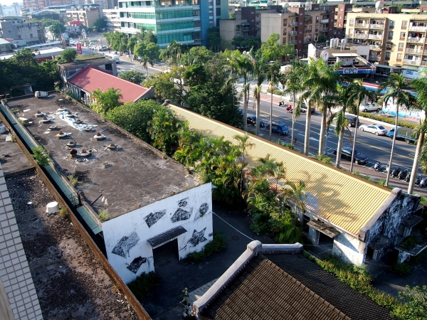

注意事項
- 位置及相關資料僅供參考，且受限於以點座標為主的呈現方式，無法反映指定、登錄為文化資產之面狀空間範圍（特別是線狀或面狀延伸的文化資產，如水圳、鐵路、聚落等），使用時宜留意。
- 除地圖中列出的項目外，我國遺產保育類型尚有：國家公園、國家自然公園、重要濕地、漁業資源保育區、受保護樹木、古物、無形文化資產等，暫因缺乏可用之空間資料而未能整合入地圖中。
- 「文資潛力點」係個人整理蒐集而來，非官方認定，且容有闕漏，歡迎來信指正或提供更多資料。
- 為推廣文化資產，本站無償提供各界以擷圖、改作等方法利用本站資料（包括商業使用），建議但不強迫明示出處。唯利用者應以相同方式授權，並應自行留意本站資料可能的疏漏。
參考資料
最近更新日期
2021.06.27
作者與聯絡方式
林靄彤
📧 b05208003@ntu.edu.tw
🌏 我的 Medium

南港瓶蓋工廠，與作者羈絆最深的文化資產，可惜目前雖部分保留但已面目全非